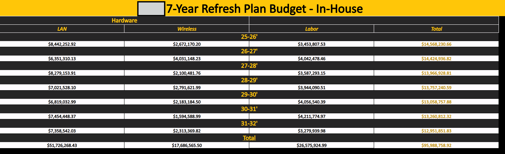

Description
This project revolved around identifying and estimating the cost of replacing company equipment.
Multiple factors were included for this process, including campus surveys, consideration of labor,
estimated timeline, and many more.
To achieve the goals of the project, networking monitoring tools and Excel were leveraged to provide
accurate counts and estimations, alongside network engineers. The project was a joint effort between
departments, necessitating strong communication standards and a high turnaround for requested deliverables.
Furthermore, enterprise presentation tool PowerBI was leveraged multiple times for high level discourse,
and the project saw multiple concurrent forms designed for different audiences. The project also required
precise financial accounting and budgetary estimation within 10% of actual cost.
Hosted over a timeline exceeding one year, the project saw many iterations, prototypes, and modifications
throughout its lifecycle, progressing from small internal presentations with management all the way to
presenting to the CIO of UF. The project continues to develop as new leaders push for more developments
and request detailed data as the organization moves into the new generation of technology.
Skills Gained
- Advanced Excel application
- Effective team management
- Budgetary oversight
- API interfacing and CSV parsing via Python